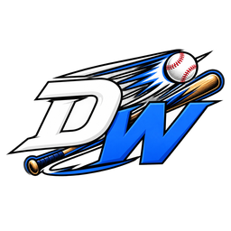

Command Center
Baseball
Football
Hockey
Basketball
Loading
Running Monte Carlo simulations
0
of 10,000 sims per player
Today
Slate data
Live game state
0
0
0 online
Loading slate…
Updated just now
Top 20 · Home Run
Ranked by Home Run Index — Statcast profile, park, weather, and matchup combined.
Game Chat
−
×
Send
My Wagers
×
Active
Settled
SPIN THE WHEEL
Random pick from the Top 20
×

20 left
SPIN
20
of 20 remaining